İstediğiniz Yemekleri Buradan Sipariş Edebilirsiniz.Şimdiden Afiyetler Olsun.☺️
YEMEKLERİMİZ
ÇORBALARIMIZ

Analı Kızlı Çorbası
4$

Mercimek Çorbası
3$

Tavuk Suyu Çorbası
5$

Domates Çorbası
3$

Brokoli Çorbası
6$
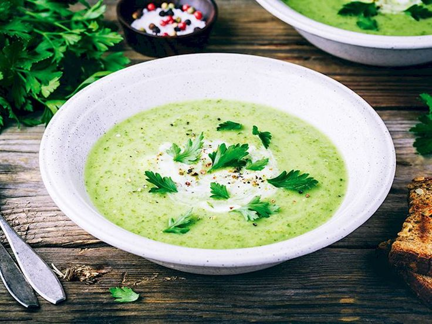
Kabak Çorbası
4$

Ispanak Çorbası
7$
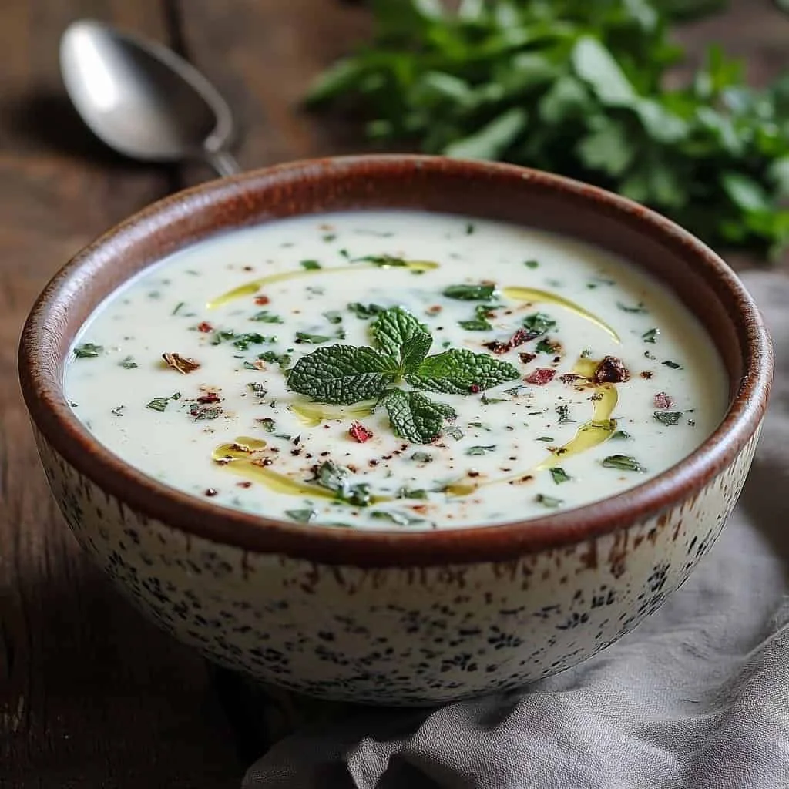
Yayla Çorbası
3$
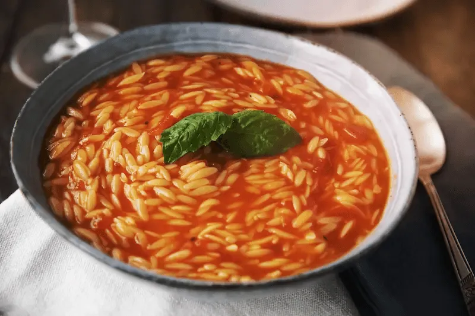
Şehriye Çorbası
3$

Börülce Çorbası
6$

Patates Çorbası
4$
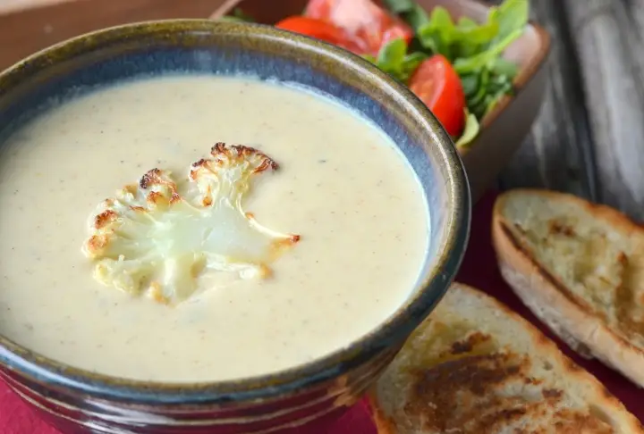
Karnabahar Çorbası
5$

İşkembe Çorbası
6$

Kelle Paça Çorbası
6$

Ezogelin Çorbası
4$

Toyga Çorbası
6$
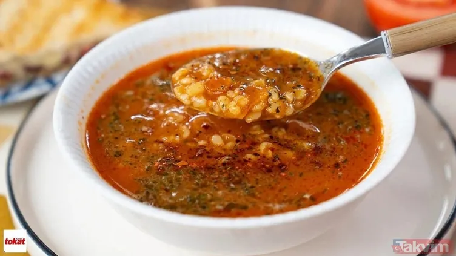
Ovmaç Çorbası
6$

Kulak Çorbası
5$

Tarhana Çorbası
2$
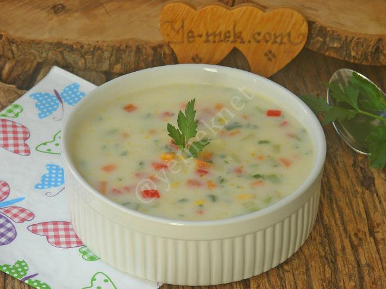
Sebze Çorbası
4$
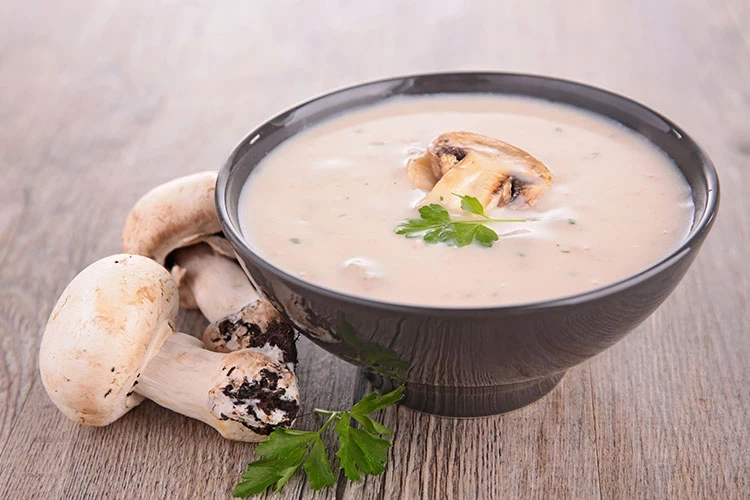
Mantar Çorbası
5$

Arabaşı Çorbası
7$
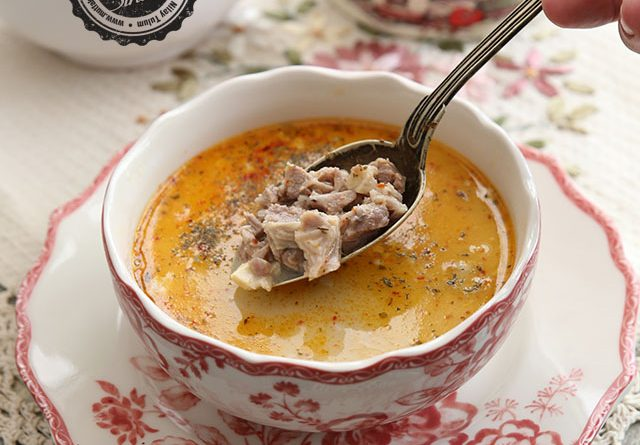
Düğün Çorbası
6$

Beyran Çorbası
4$

Bamya Çorbası
4$

Kremalı Tavuk Çorbası
5$

Soğan Çorbası
5$
ANA YEMEKLER
🥩ETLİ YEMEKLERİMİZ

Et Sote
10$

Kuzu Şiş
8$

Dana Şiş
9$

Dana Rosto
11$

Etli Kuru Fasulye
6$

Kavurma
10$

Dana Antrikot
14$

Beyti Kebap
12$

Etli Güveç
9$

Adana Kebabı
7$

Urfa Kebabı
7$

Testi Kebabı
11$
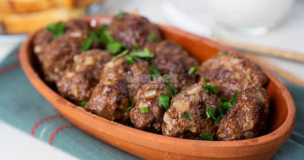
Kiremitte Köfte
6$
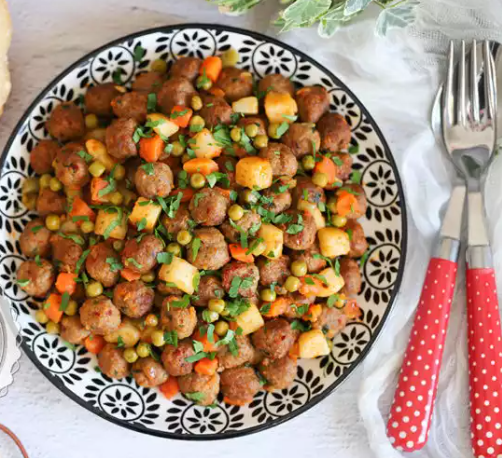
Misket Köfte
5$
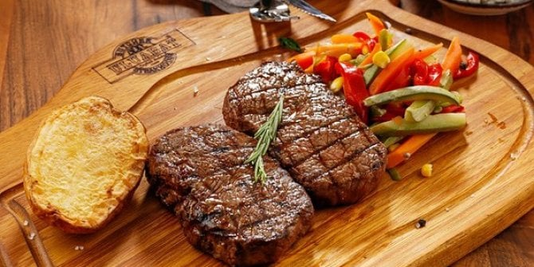
Bonfile Izgara
17$

Ali Nazik
9$
Hünkar Beğendi
12$
🍗TAVUKLU YEMEKLERİMİZ

Izgara Tavuk
4$

Izgara Tavuk Göğsü
5$
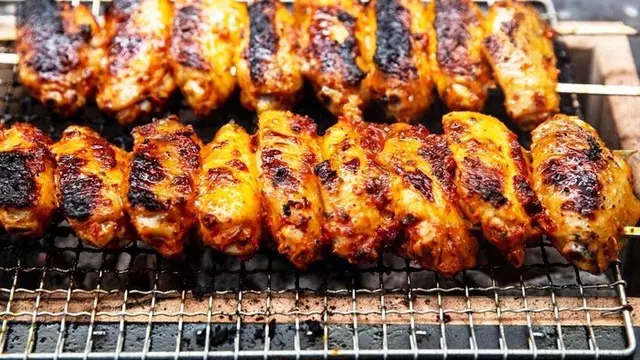
Izgara Tavuk Kanat
6$

Fırında Tavuk Baget
5$

Fırında Tavuk But
4$

Fırında Tavuk İncik
7$
Tavuk Şiş
8$

Mantarlı Tavuk Sote
8$

Tavuk Şinitzel
6$

Kremalı Mantarlı Tavuk
7$

Tavuk Fajita
5$

KFC Style Çıtır Tavuk
7$

Tavuklu Pizza
4$
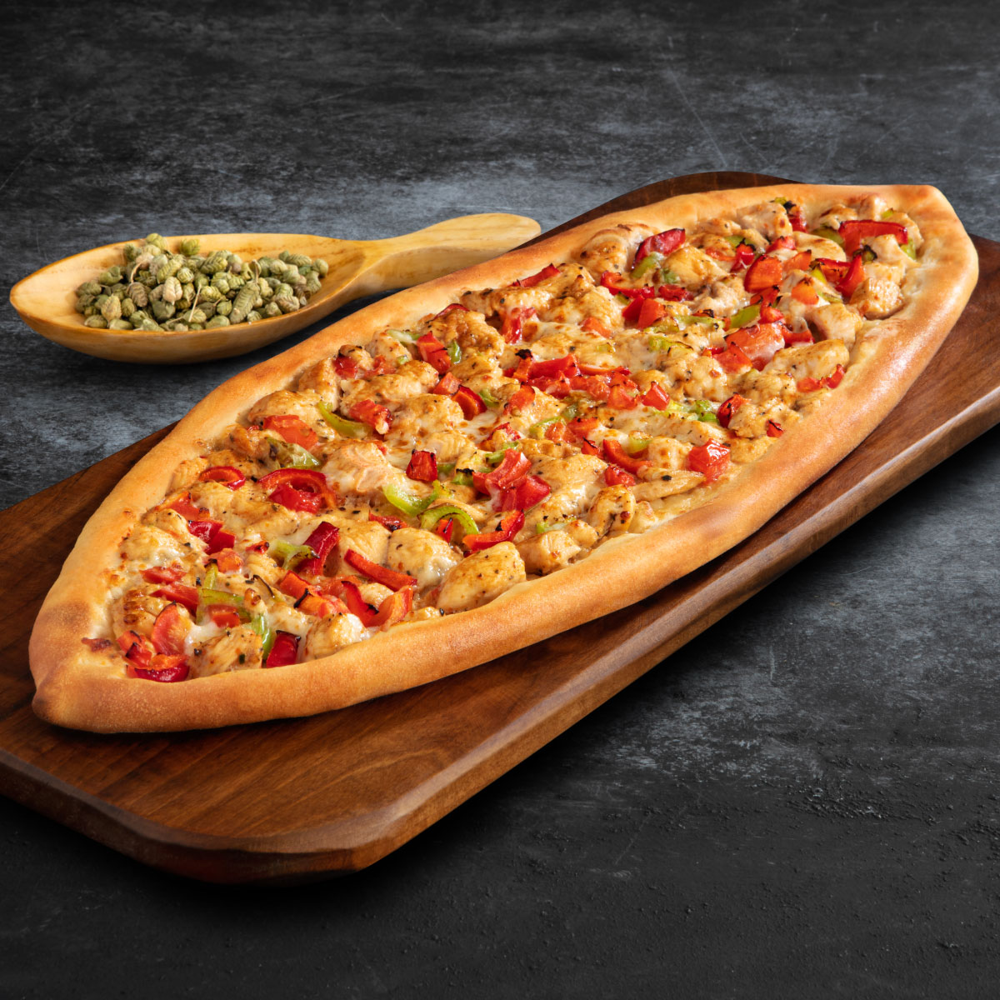
Tavuklu Pide
4$

Tavuklu Salata
4$

Tavuklu Sebzeli Krep
3$
🐟BALIKLI YEMEKLERİMİZ

Izgara Levrek
8$

Izgara Çipura
8$

Izgara Palamut
8$
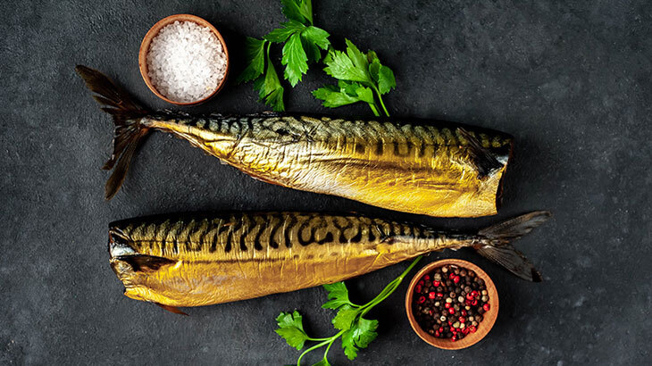
Izgara Uskumru
8$
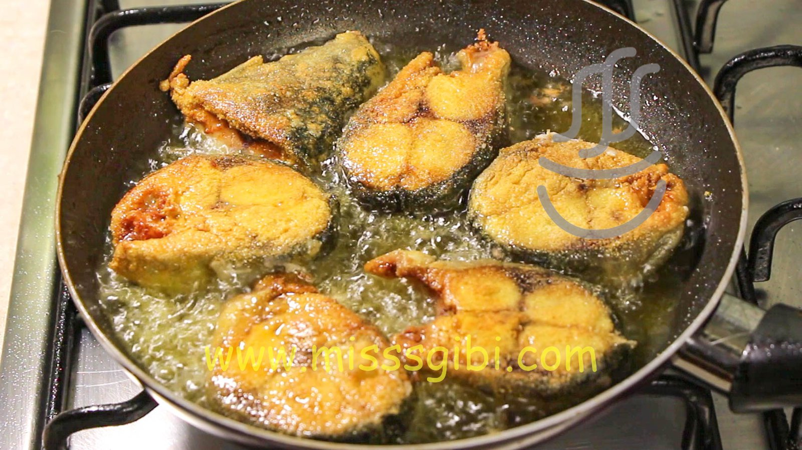
Palamut Tava
6$

Alabalık Izgara
8$

Fırında Sezgin
10$

Balık Köftesi
5$

Kalamar Tava
4$

Karides Güveç
7$

Fırında Somon
6$
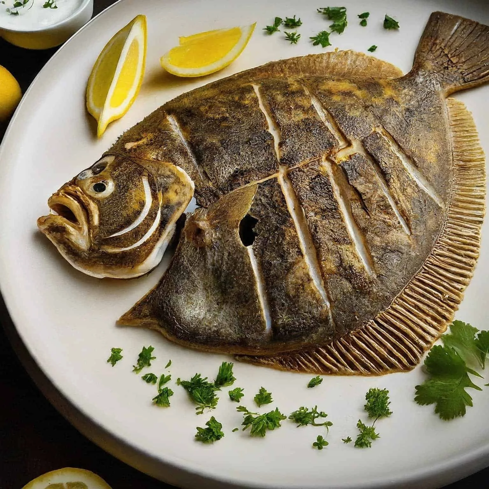
Kalkan Tava
5$

Hamsi Tava
5$
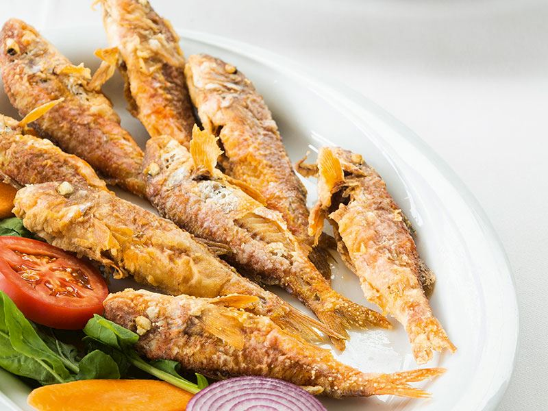
Barbun Tava
5$

Mezgit Tava
5$

Midye Tava
5$

Ahtapot Izgara
9$
TATLILAR
🥛SÜTLÜ TATLILARIMIZ

Sütlaç
5$

Kazandibi
6$

Muhallebi
4$
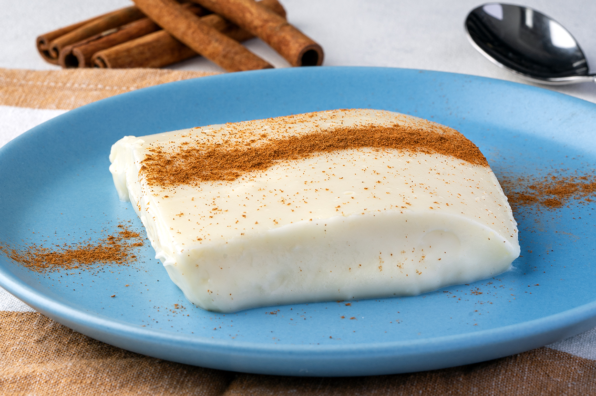
Tavukgöğsü
4$

Keşkül
6$

Profiterol
6$